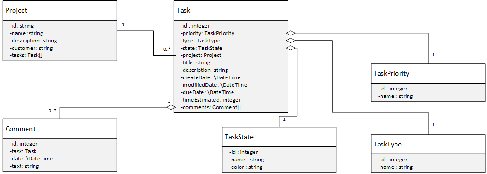

Listen to the Symfony a brief introduction into Symfony2
1. Introduction
In the first part of this tutorial I will show you how to create a very simple Issue-Tracker using the web application framework Symfony 2.
In the second part of this tutorial add multi-user support to the application. The solutions for both parts of the tutorial are available on GitHub.
Everything is in one repository seperated by tags:
Part I (v.1.0.1)
Part II (v.1.0.2)
What this tutorial is about
This tutorial is about Symfony 2, Doctrine2 and Twig.
The reader will learn how to implement the Model based on an UML diagram, how to create Controllers handling all the CRUD actions for
- Setting up a environment for using Symfony
- Installing and configuring Symfony
- Implementing the Model using Doctrine2
- Implementing the Controllers
- Implementing the View using Twig
What this tutorial is not about
I'll assume that you are familiar with the concepts of object oriented programming, uml, relational databases and sql because I won't cover these topics.
2. Environment requirements
Personally I recommend using a UNIX based system, but every OS that supports at least PHP 5.3.3 and MySQL should be fine. In this tutorial I'll assume that you are using a UNIX based system. Symfony has also some requirements , your system needs to fulfill. If you are new to PHP I recommend you to use the Vagrant file from the next section.
2.1 Vagrant
This Vagrant file uses simple Shell-Provisioning for creating a LAMP environment that works with Symfony2
1 2 3 4 5 6 7 8 9 10 11 12 13 14 15 16 17 18 19 20 21 22 23 24 25 26 27 28 29 30 31 | # Vagrantfile API/syntax version. Don't touch unless you know what you're doing!
VAGRANTFILE_API_VERSION = "2"
Vagrant.configure(VAGRANTFILE_API_VERSION) do |config|
# All Vagrant configuration is done here. The most common configuration
# options are documented and commented below. For a complete reference,
# please see the online documentation at vagrantup.com.
# Every Vagrant virtual environment requires a box to build off of.
config.vm.box = "phusion/ubuntu-14.04-amd64"
#No Autoupdate
config.vm.box_check_update = false
# Create a private network, which allows host-only access to the machine
# using a specific IP.
config.vm.network "private_network", ip: "192.168.10.10"
#set hostname
config.vm.hostname = "symfony.dev"
#Bridge
config.vm.network "public_network"
# Sync current folder
config.vm.synced_folder "./", "/var/www/app", group: "www-data", owner: "www-data", mode: 0775
#provisioning
config.vm.provision "shell", path: "./provision.sh", privileged: true
end
|
1 2 3 4 5 6 7 8 9 10 11 12 13 14 15 16 17 18 19 20 21 22 23 24 25 26 27 28 29 30 31 32 33 34 35 36 37 38 39 40 41 42 43 44 45 46 47 48 49 50 51 52 53 54 55 56 57 58 59 | #!/bin/bash
MYSQL_PASSWORD="symfony2"
# update
apt-get update
# set mysql password
debconf-set-selections <<< "mysql-server mysql-server/root_password password ${MYSQL_PASSWORD}"
debconf-set-selections <<< "mysql-server mysql-server/root_password_again password ${MYSQL_PASSWORD}"
# install dependencies
apt-get install -y \
php5 \
php5-cli \
php5-curl \
php5-gd \
php5-memcached \
php5-imagick \
php5-imap \
php5-mysql \
php5-json \
php5-xsl \
php5-mcrypt \
php5-intl \
php5-xcache \
php5-mongo \
libssh2-php \
php5-mcrypt \
php5-intl \
git \
mysql-server \
apache2 \
libapache2-mod-php5
#enable mod_rewrite
a2enmod rewrite
# configure
cat <<< EOT > /etc/apache2/sites-available/000-default.conf
<VirtualHost *:80>
ServerAdmin webmaster@localhost
DocumentRoot /var/www/notifair/web
<Directory /var/www/notifair/web>
# enable the .htaccess rewrites
AllowOverride All
Order allow,deny
Allow from All
</Directory>
ErrorLog ${APACHE_LOG_DIR}/error.log
CustomLog ${APACHE_LOG_DIR}/access.log combined
</VirtualHost>
EOT
# restart apache
service apache2 restart
# prepare mysql database
echo "CREATE DATABASE symfony2 CHARACTER SET utf8 COLLATE utf8_general_ci;" | mysql -u root -p$MYSQL_PASSWORD
# install composer globally
curl -sS https://getcomposer.org/installer | php
mv composer.phar /usr/local/bin/composer
|
2.2 PHP for OS X 10.6 to 10.10
If you are planning to install PHP native on your Mac I recommend you to use the pre-build binary packages provided by liip. You'll find detailed installing instruction here.
3. Setting up Symfony
Recently the Symfony team introduced the Symfony Installer which makes it very easy to install Symfony into a certain directory:
1 2 3 4 5 | # Download the symfony installer
sudo curl -LsS http://symfony.com/installer -o /usr/local/bin/symfony
sudo chmod a+x /usr/local/bin/symfony
# Create a new project
symfony new projectmgr
|
Now we need to configure the database connection,
1 2 3 4 5 6 7 8 9 10 11 12 13 14 | # This file is auto-generated during the composer install
parameters:
database_driver: pdo_mysql
database_host: 127.0.0.1
database_port: 3306
database_name: symfony2
database_user: root
database_password: symfony2
mailer_transport: smtp
mailer_host: 127.0.0.1
mailer_user: null
mailer_password: null
locale: en
secret: 358f26d5b77ddb670676159623617a9a5bcca519
|
3.3 Removing the demo code
The Symfony 2 standard edition comes with some demo code, which is useless for our purpose. So we need to remove it.
- Delete the directory
src/Acme - Remove the reference
new Acme\DemoBundle\AcmeDemoBundle()from the application kernel inapp/AppKernel.php#24. - Remove the reference to the bundle in
app/routing_dev.yml
4. Creating the Model
This is the uml diagram of our Model. For reasons of clarity and comprehensibility getters and setters were omitted.

Using annotations is the recommend way of defining the orm mapping.
Of course you can also use Yaml, XML or PHP to define the mapping information of the Doctrine entities. That said, it is the best practice approach to use annotations.
We start by implementing the class AppBundle\Entity\TaskState:
1 2 3 4 5 6 7 8 9 10 11 12 13 14 15 16 17 18 19 20 21 22 23 24 25 26 27 28 29 30 31 32 | <?php
//src/AppBundle/Entity/TaskState.php
namespace AppBundle\Entity;
//Important
use Doctrine\ORM\Mapping as ORM;
/**
* @ORM\Entity
* @ORM\Table(name="task_states")
*/
class TaskState
{
/**
* @ORM\Id
* @ORM\GeneratedValue(strategy="AUTO")
* @ORM\Column(type="integer")
*/
private $id;
/**
* @ORM\Column(type="string")
*/
private $name;
/**
* @ORM\Column(type="string", nullable=true)
*/
private $color;
// getters and setters ...
}
|
The fields $name and $color are self-explanatory. We use the @Id annotation to tell Doctrine that field $id is our primary key.
Further we tell Doctrine to use the strategy AUTO to generate the value of $id. This tells Doctrine to pick the strategy that is preferred by the used database platform.
In our case the choose strategy would be IDENTITY which makes use of the MySQL AUTO_INCREMENT attribute.
The implantation process for AppBundle\Entity\TaskType and AppBundle\Entity\TaskPriority is equivalent, so we continue with the AppBundle\Entity\TaskState entity.
1 2 3 4 5 6 7 8 9 10 11 12 13 14 15 16 17 18 19 20 21 22 23 24 25 26 27 28 29 30 31 32 33 34 35 36 37 38 39 40 41 42 43 44 45 46 47 48 49 50 51 52 53 54 55 56 57 58 59 60 61 62 63 64 65 66 67 68 69 70 71 72 73 74 | <?php
namespace AppBundle\Entity;
use Doctrine\Common\Collections\ArrayCollection;
use Doctrine\ORM\Mapping as ORM;
/**
* @ORM\Entity
* @ORM\Table(name="tasks")
*/
class Task
{
/**
* @ORM\Id
* @ORM\GeneratedValue(strategy="AUTO")
* @ORM\Column(type="integer")
*/
private $id;
/**
* @ORM\ManyToOne(targetEntity="TaskPriority")
* @ORM\JoinColumn(name="priority_id", referencedColumnName="id", nullable=false)
*/
private $priority;
/**
* @ORM\ManyToOne(targetEntity="TaskType")
* @ORM\JoinColumn(name="type_id", referencedColumnName="id", nullable=false)
*/
private $type;
/**
* @ORM\ManyToOne(targetEntity="TaskState")
* @ORM\JoinColumn(name="state_id", referencedColumnName="id", nullable=false)
*/
private $state;
/**
* @ORM\ManyToOne(targetEntity="Project", inversedBy="tasks")
* @ORM\JoinColumn(name="project_id", referencedColumnName="id", nullable=false, onDelete="CASCADE")
*/
private $project;
/**
* @ORM\Column(type="string")
*/
private $title;
/**
* @ORM\Column(type="text")
*/
private $description;
/**
* @ORM\Column(type="datetime")
*/
private $createDate;
/**
* @ORM\Column(type="datetime", nullable=true)
*/
private $modifiedDate;
/**
* @ORM\Column(type="datetime", nullable=true)
*/
private $dueDate;
/**
* @ORM\Column(type="integer", nullable=true)
*/
private $timeEstimated;
// getters and setters...
|
At this point it's getting exciting since we are now defining the associations between the entities. Let's take a look at the annotations of the $state field.
The first annotation @ManyToOne defines a unidirectional association to the TaskState entity. On is internally represented by a foreign key.
The second annotation @JoinColumn defines the columns which are necessary for the join. It also defines that the task state cannot be null.
$project is the owning side of bidirectional association.
There are many more association types which can be used. The doctrine documentation is a excellent reference if you want to know more about association mapping.
The AppBundle\Entity\Project entity defines the